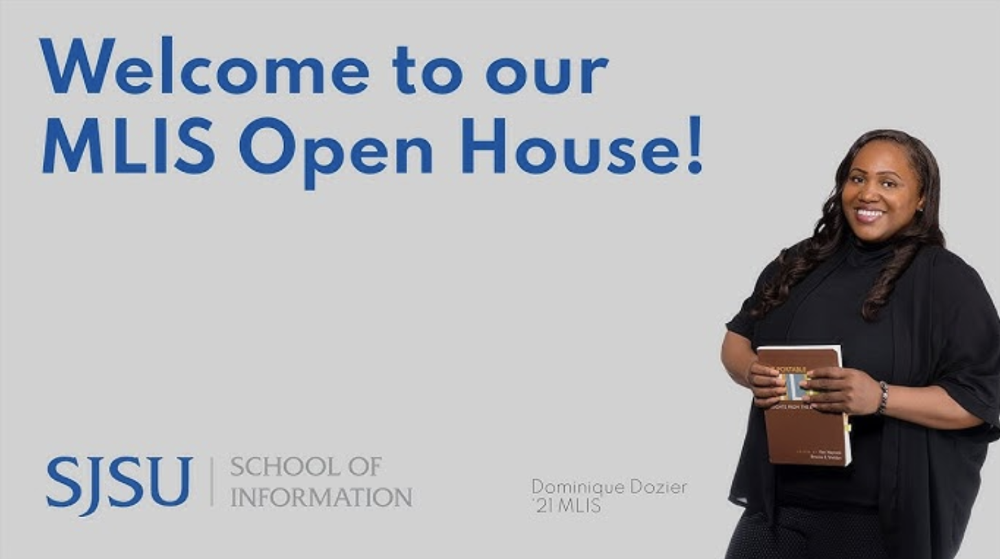

Section
Training Agenda
Due to the growing and changing nature of the field of emerging technologies as they relate to GLAM institutions, it is true that many necessary skills are learned through the daily activities and responsibilities of the different positions these institutions offer. That being said, there are many external training opportunities those interested in this work would greatly benefit from investigating and taking! Listed below are just a few of these opportunities offered outside the boundaries of an MLIS graduate program, ranging from DIY online coding courses to structured forums on A.I. training for library professionals.
External Training Opportunities
Professional Development Conferences
Here’s one that the department recently sent to us MLIS students!
MLIS Programs with Emerging Tech Specializations
There are even certain MLIS programs that specialize particularly in technology fields as they relate to library related positions and fields. Courses within these programs often give students even more specialized training in areas such as coding languages, user interfaces, Artificial Intelligence ethics and policy guidance and more, which other generalized programs might not have the time or bandwidth to offer.
SJSU MLIS Open House Video
Click the thumbnail to watch on YouTube.
